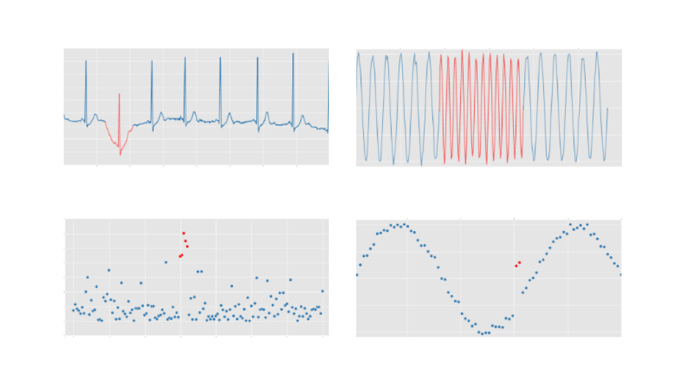

16. 異常検知とは
異常検知の最も根源的な欲求は、「なにか変」を機械にわかるように定量評価 or 定式化し、人間の勘に頼らず見つけ出すことです。しかしながら、この「なにか変」を機械に検出させるには技術的な困難が伴います。人の目には明らかに「変なデータ」であっても、これを判定するモデルには様々な工夫が必要になります。
※1 データマイニング (Data mining) とは、大量のデータに対して、統計学や人工知能などの分析手法を駆使して、「知識」を見出すための技術です。
16.1. 異常検知の手法と適用例
外れ値検知
変化点検知
異常部位検知
16.2. 外れ値検知
外れ値とは、値が他のデータに比べて大きく離れている。というものです。この外れ値は、普段では発生すると考えられないようなデータ点であり、それ以外のものとは傾向が異なると判断できます。その外れ値を見つける異常検知の問題を「外れ値検知」と呼びます。これは直感的にわかりやすく、他の点(データ)と明らかに離れており異常な値を見つけていると捉えることができます。
外れ値検知の事例
普段の傾向から逸脱した動きをした場合に、アラートを流すといった運用ができることが想像できます。
16.3. 変化点検知 & 異常部位検知
これに対して、異常部位検出は、明らかな異常が起きている部分時系列を検出することを指しています。変化点検知とはある1点で検知するのか、一定区間で検知するのかで呼び名が変わっています。概念としては別物ですが、時系列データにおいて正常でない振る舞いをした場面を検出するという意味では変化点も異常部位も同じ意味になります。
変化点検知の事例
以下は、日別販売金額の推移における変化点を検出するというものです。
製品の販売量と在庫量の管理について、変化点検知を利用することで早期での発見を実現しています。
16.4. 異常検知の基本的な流れと用いられる手法
異常と呼んでも様々な異常がありますが、異常検知の基本的な流れとしては以下の通りです。
正常時のデータの振る舞いのパターンを見つける
上記から正常・異常の境目となる閾値を設定する
観測データが閾値を超えたら異常発生と判断する
これらを見つける具体的な手法としては以下のようなものが挙げられます。
統計モデルに基づくもの
データ間の距離に基づくもの